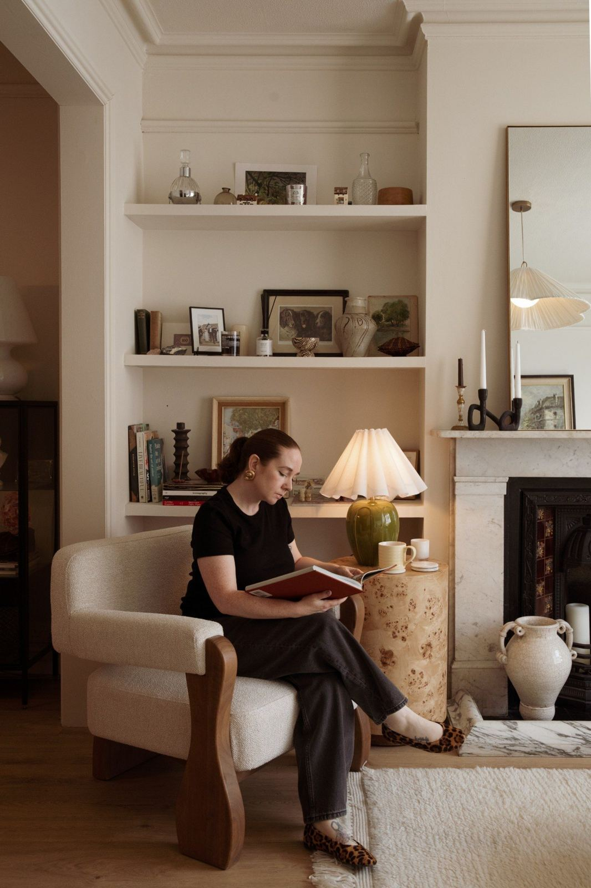

A London x Dorset-based content creator and photographer documenting interiors, styling and the everyday life that happens around them.
With six years' experience in interiors and colour, working for one of the fastest-growing paint brands in the UK, I share colour expertise and insight alongside my passion for real homes and beautiful design, from room refreshes to shopping guides and product picks.
Home is at the heart of what I share, but it's only part of the story. Alongside it I share glimpses of the life lived in those rooms: what I'm wearing on a slow weekend, a coastal walk, a favourite café, the pieces I reach for again and again. It's the same eye for character and texture, carried from my home into my everyday.
I shoot everything myself, from still photography to short-form video, so brands get a cohesive set of assets with one distinct point of view.
It's the thread running through everything I share. I'm always searching for pieces with personality for my own home and style, and helping my audience find them too, for their homes and beyond.
For brands, it means your product is introduced as a genuine find, not an ad.
Six years in the paint industry working in brand and marketing means I have a deep understanding of how colour in-particular impacts a room, and how to talk about it, alongside the overall design and what people are aspiring to find for their homes.
Products placed in context, styled to feel like they've always belonged in the space. Less posed, more thoughtful. Layered styling, everything works in context.
I only share what I'd use myself, so recommendations land with an audience that trusts them.